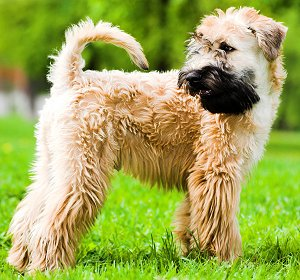
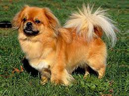
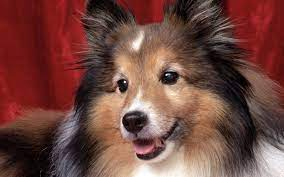
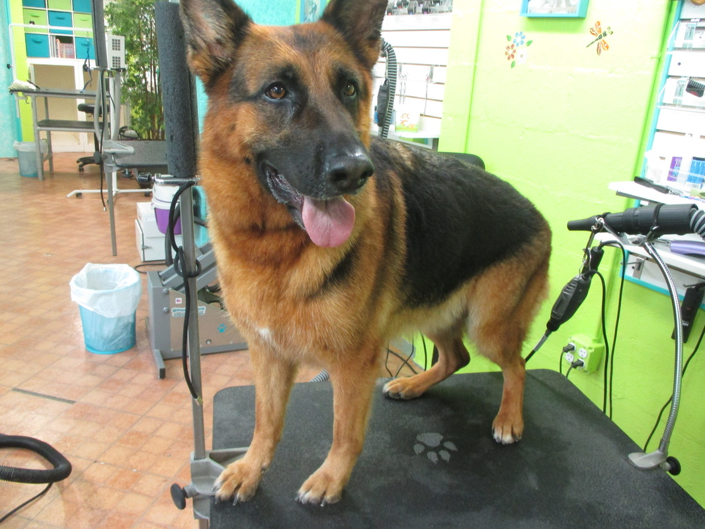
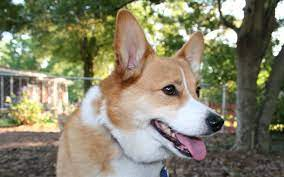
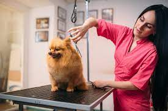

Dee Ramos-Owner
 Dee grew up working summers at her aunt's dog frooming salon, The Clip-n-Fluff. After graduating from Miami Dade College with a degree in business administration. Dee managed a buys veterinary clini. Several Years later, her aunt announced that she was ready to retire. and Dee jumped at the chance to take over the business. She had new ideas of her own. and her aunt was happy to see that Dee would be taking what she had started to the next level. Dee is the proud best friend to Fritz, a Wheaten Terrier, and his Tibetan Spaniel sidekick, Sam.
Shane Barlow-Head Groomer
Shane was our fist intern. After graduating from St. Pertersbudg Colleg's Vet tech program, he joined Pampered Pups as a full-time groomer. He know the name and gromming preferences of every pet that comes into Pampered Pups. His custom Waggle Spa Treatment is our most popular grooming package. Shane specializes in grooming your dog to be "show Ready". Shane regulary brushes the coat of Felicity, his pampered Collie.
Kasey Devine-Boarding Manager
 Kaswy has been working at Pamerped Pups since the beginning. Her organizational and social skills help manage Pampered Pups' daycare and boarding schedules without a whimper. She was the architect of our Stay-n-Play, with its individual sleeping areas connected to the outdoor play yard.Her knowledge of every breed's likes and dislikes has helped us crete teh best possible atmosphere for each dog while they're guests of ours. Kasey has her hands full at home, too. She recently married Frank, whose German Shepherd. Max, is getting along pretty well with Bubba, Kasey;s bossy Corgi.
Our Support Staff and Interns
Jack, Carmella, Ryan, Jamie, and Ana are comitted to making sure gusts waggle mor than they bark. They are assisted by some smart and caring interns from the veterianarian tech program at the local college. They are involved in all areas of Pampered Pups and specialize in making sure your dog is safe and having fun.
